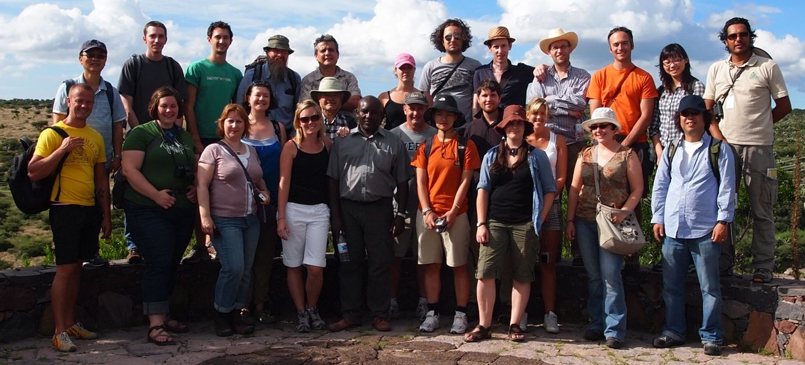
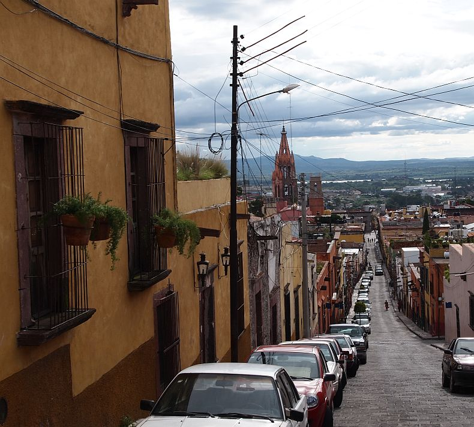
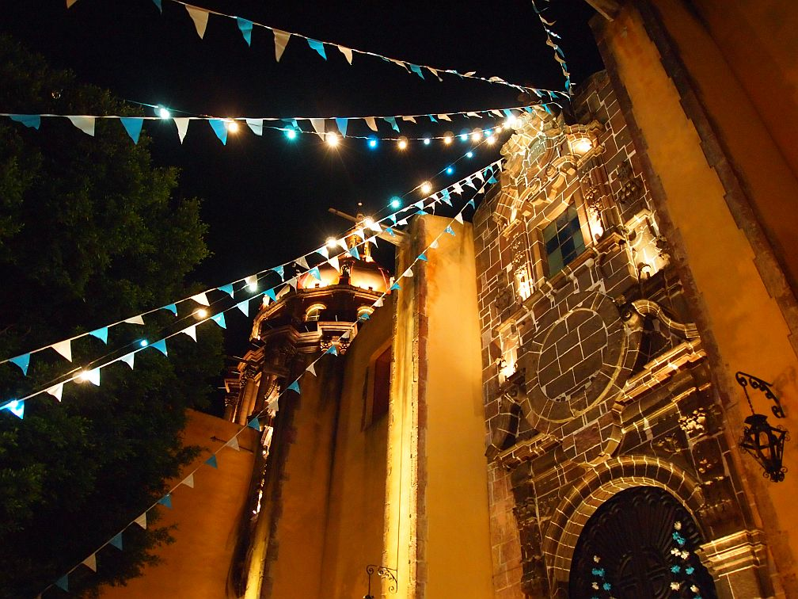
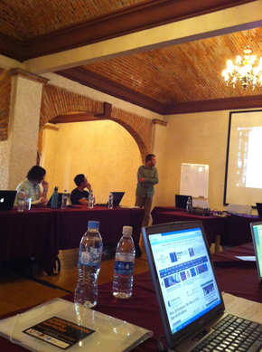
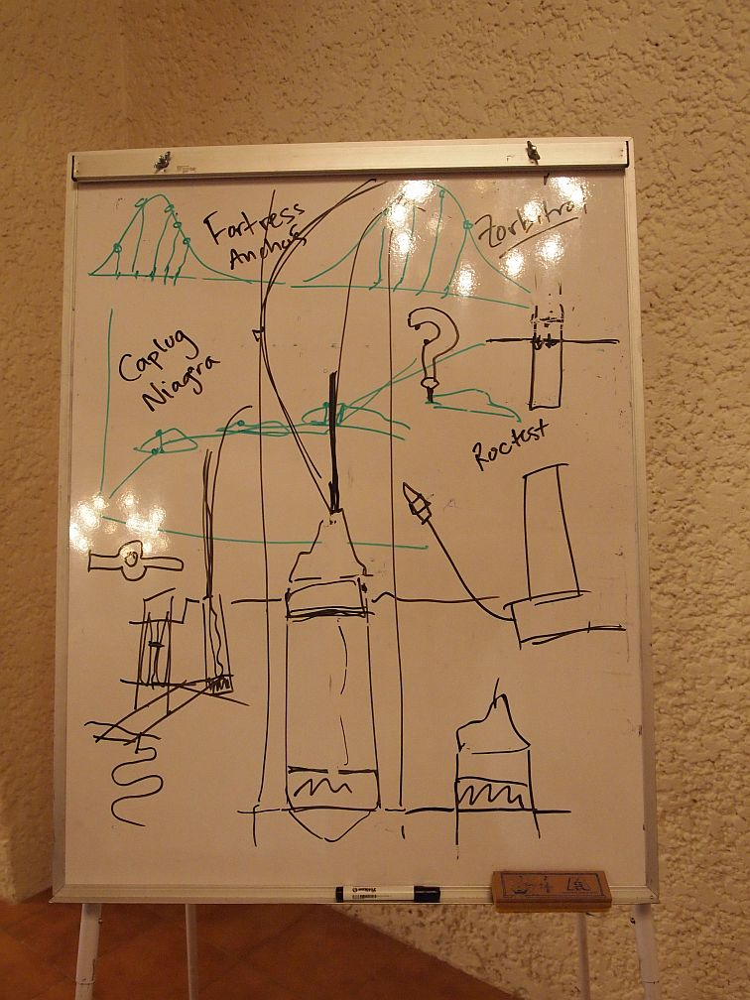

Paleochronology Building Workshop
This workshop was held 17-21 August 2010 in San Miguel de Allende, Mexico. Financial support was kindly provided by PAGES and INQUA (via the INTREPID initiative led by Prof. Lowe at Waikato NZ). Participants came from Mexico, Canada, the US, the UK, Poland, Sweden, France, Kenya, South Africa, South Korea, Australia, and perhaps even a few more countries. At this page, the lectures and practicals can be accessed, as well as the age-modelling software used.

Workshop participants, with guide Mario (top row, far right) at El Charco del Ingenio ecological reserve in San Miguel de Allende. Photo © by Amy Myrbo
Lectures
- Introduction to Bayes
- Dates
- Basic age-depth models
- Chronology
- Outliers
- Multiple sites
- Sampling design
- Neotoma database
Practicals
- Basic age-depth models
- Bayesian age-depth models
Software





Photos © by Amy Myrbo and Keith Bennett